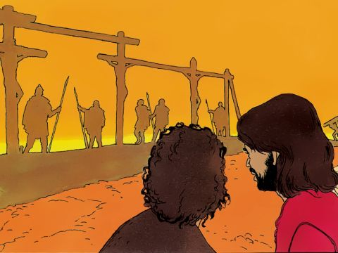
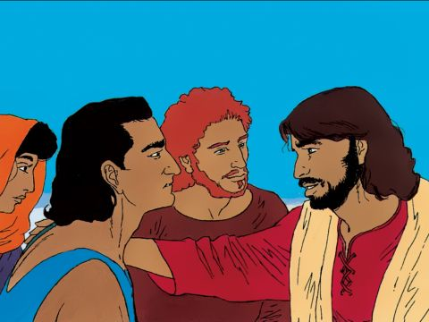

The Cost Of Following Lord Jesus
Now when Jesus saw great multitudes about him, he gave commandment to depart unto the other side.
And a certain scribe came, and said unto him, Master, I will follow thee whithersoever thou goest.
And Jesus saith unto him, The foxes have holes, and the birds of the air have nests; but the Son of man hath not where to lay his head.
And another of his disciples said unto him, Lord, suffer me first to go and bury my father.
But Jesus said unto him, Follow me; and let the dead bury their dead.
Matthew 8:18-22
- 
- 